| ---BEBIDA FAVORITA--- | ---FLORES FAVORITAS--- | ||||||||
| 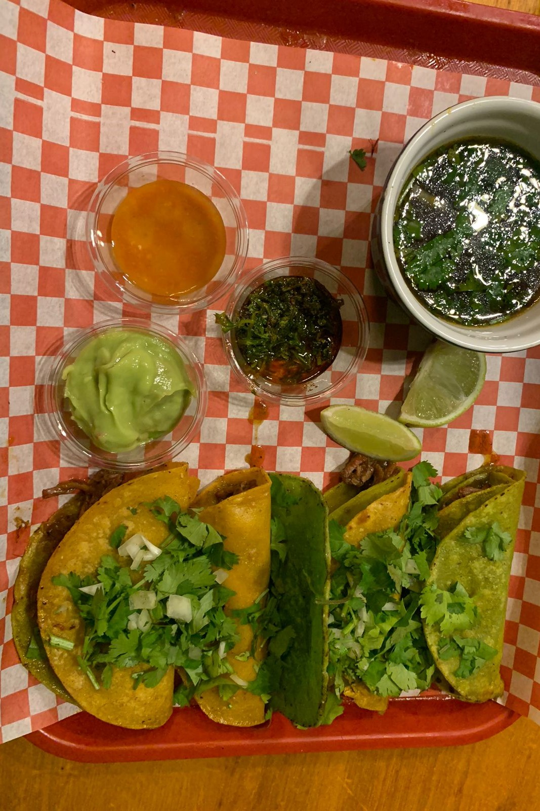 | 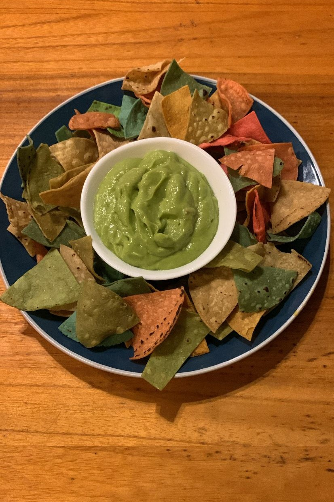 | 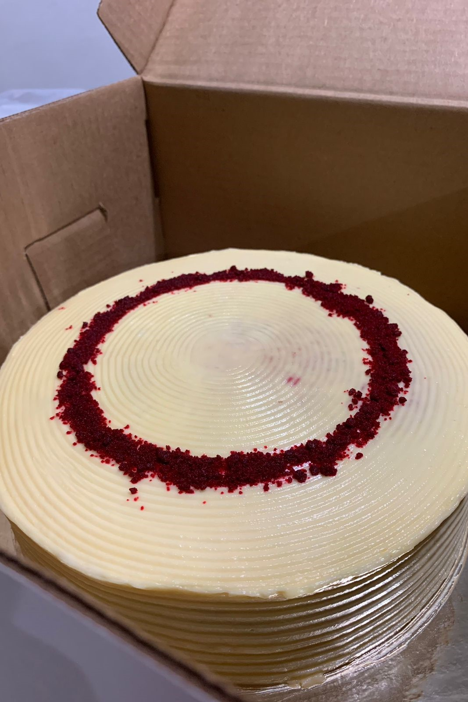 | 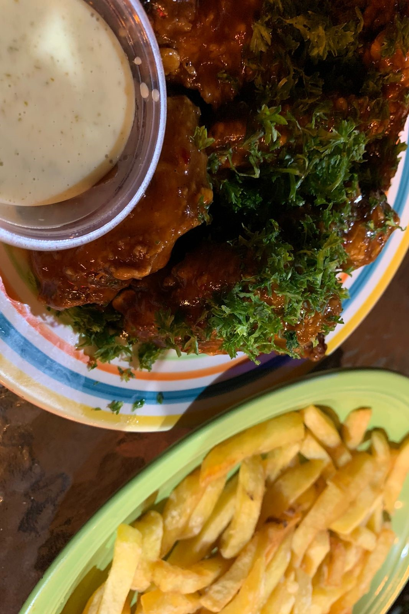 | 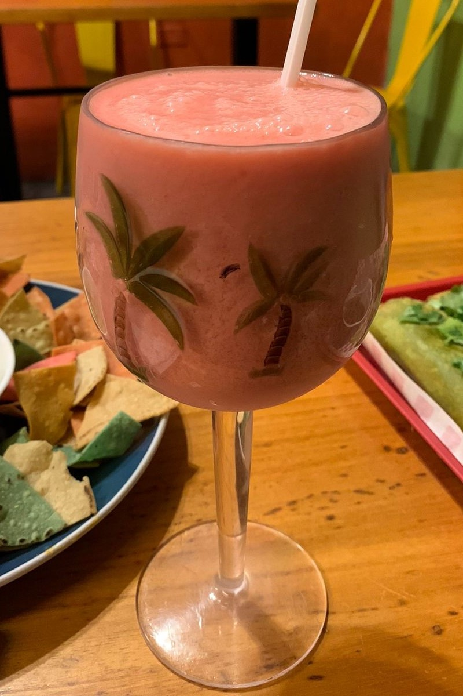 | 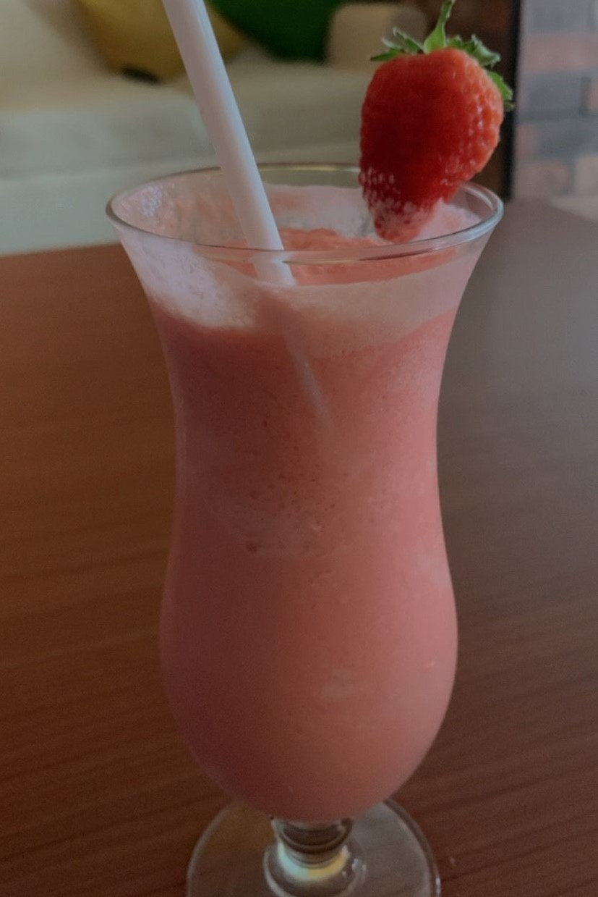 | 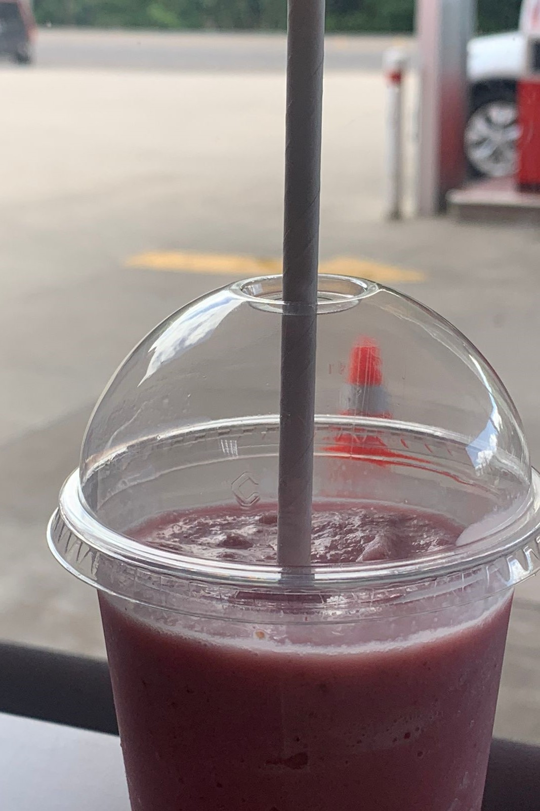 | 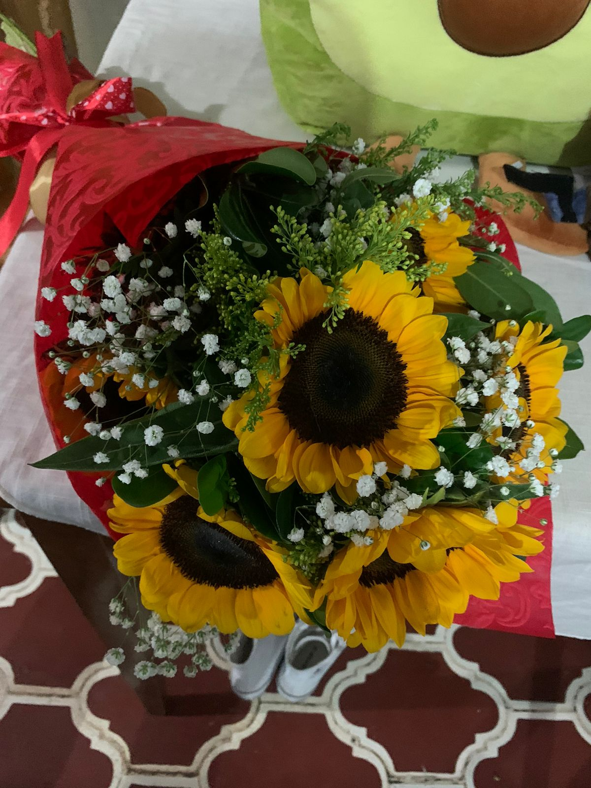 | ||
| 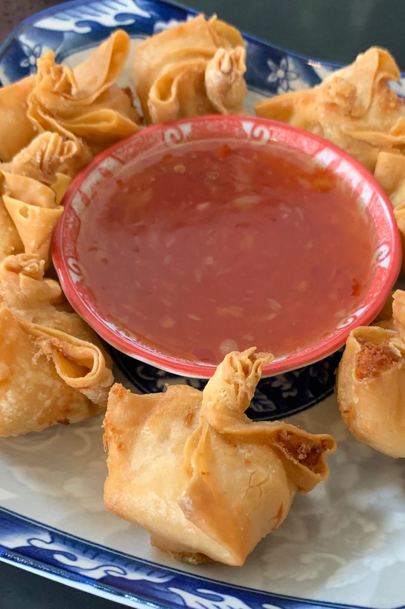 | COMIDAS | 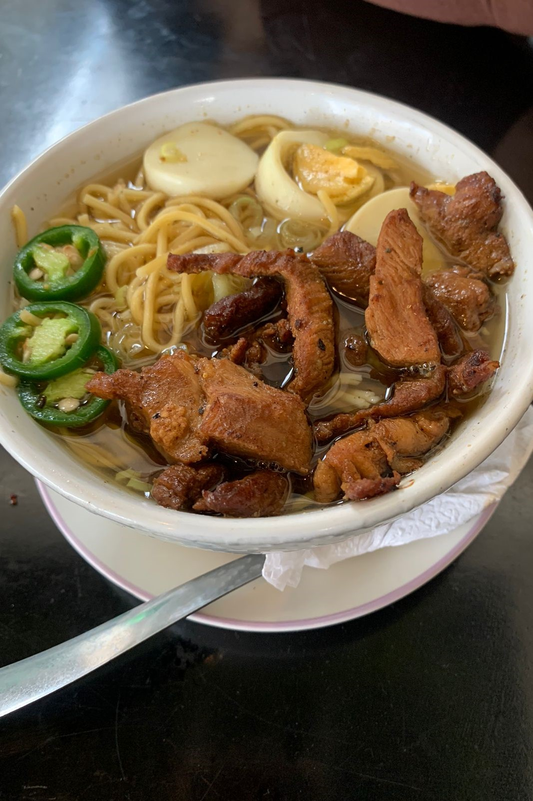 | ---Cantante Favorito--- | ||||||
| 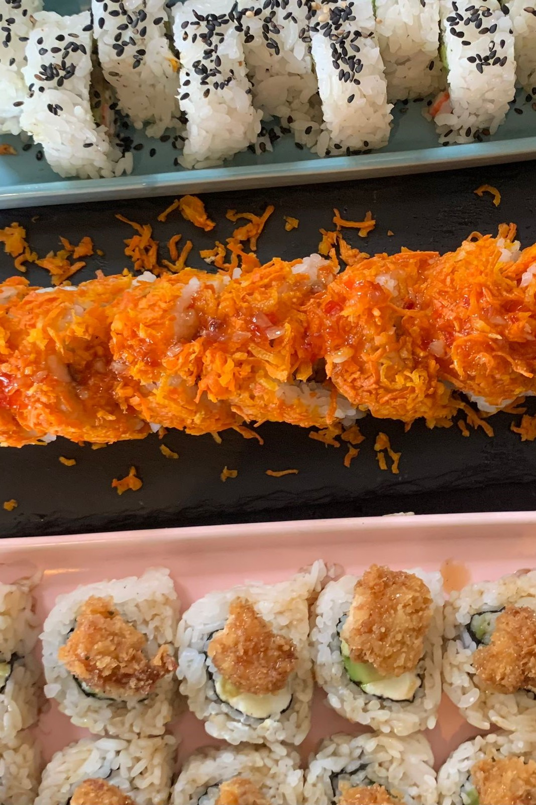 | FAVORITAS | 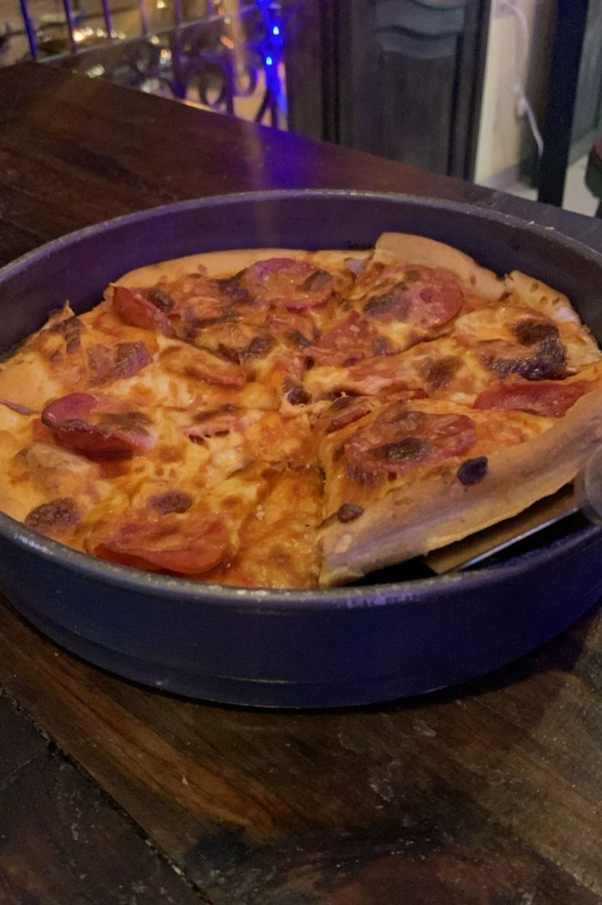 | |||||||
| 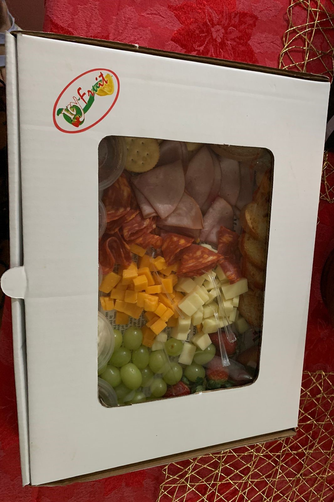 | |
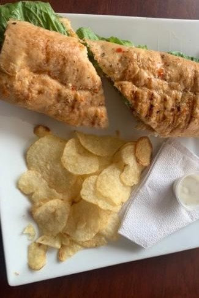 | 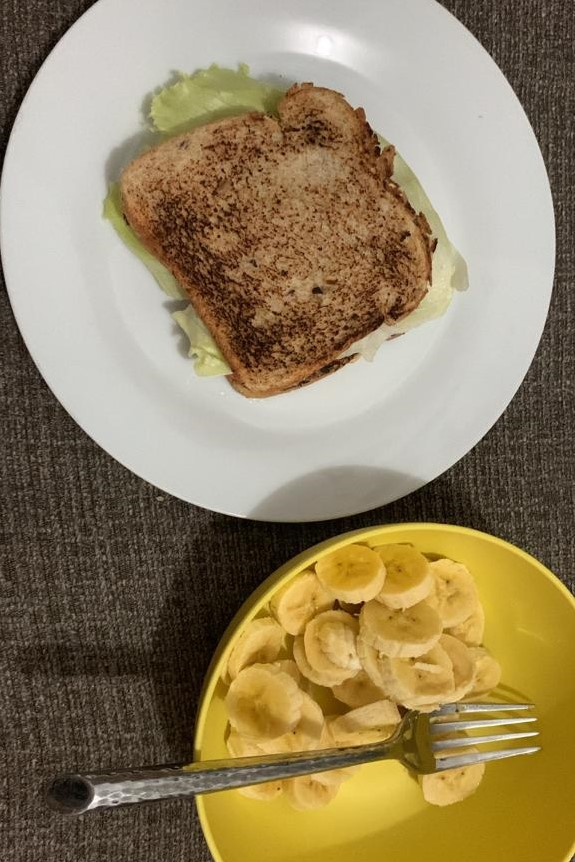 | Preparación de un smoothie de fresa | |||||
Continuando con mis gustos personales, destaco la actividad que más disfruto hacer en mi día con las siguentes imagenes.
| 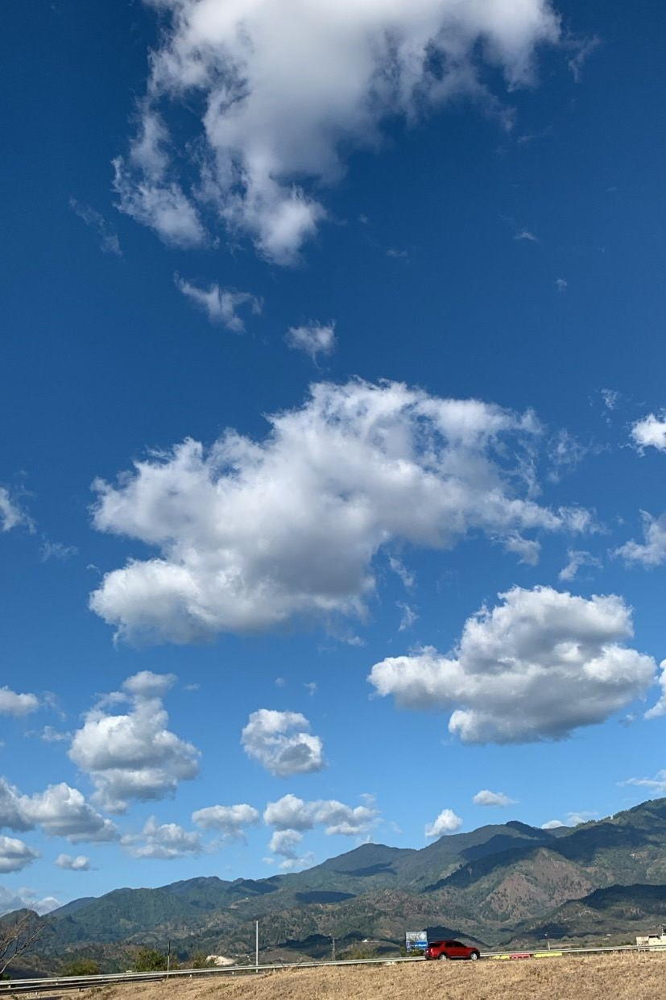 | ||OBSERVAR EL CIELO, considero que hacerlo nos ayuda a cambiar la perspectiva de las cosas, y, de alguna manera, ser más felices. Aunque la luna, las estrellas y las nubes estén allá, arriba, distantes e inalcanzables, sentimos una profunda conexión con ellas. |